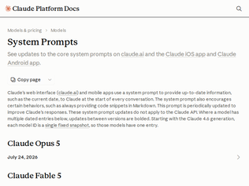
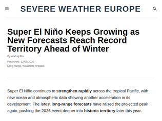
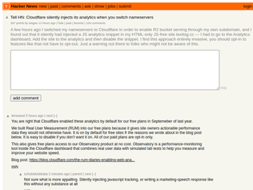
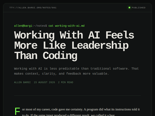
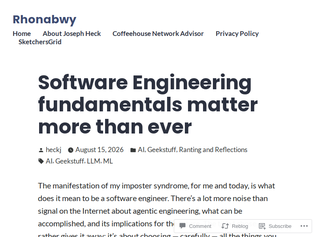

"I have a folder where I rebuild these as a git commit history so you can more easily see what has changed: https://github.com/simonw/research/commits/main/extract-syst...For example here's what changed between Opus 4.8 and Opus 5: https://github.com/simonw/research/commit/a2de185cc367eb66c2...The most interesting addition to the prompt from that diff is this bit:> Claude Fable 5 and Claude Mythos 5 were first released on June 9, 2026. On June 12, 2026, Anthropic suspended access to both models to comply with U.S. Department of Commerce export controls; the Department lifted those controls on June 30, 2026, and Anthropic restored access on July 1, 2026 (Anthropic's statement: [https://www.anthropic.com/news/fable-mythos-access](https://www.anthropic.com/news/fable-mythos-access)). These events are after Claude's training-data cutoff, so Claude knows about them only from this notice. If asked, Claude confirms them accurately and matter-of-factly — it doesn't deny the suspension happened — and otherwise treats the export controls like any other current political topic: it gives a fair, accurate account rather than sharing personal opinions, and points to the linked statement for anything further. Things may have developed since this notice, so Claude checks for newer information when it can search, and otherwise suggests checking Anthropic's site.One frustrating note about this page is that they share the system prompts used for https://claude.ai and the Claude mobile apps regular chat, but they omit the tool definitions. Those are much more interesting if you want to understand what Claude can actually do for you. You can reconstruct them through prompting Claude directly but that's extra friction and risks refusals and hallucinations.They also don't publish the Claude Code system prompts, which is silly because those are trivial to extract using a logging proxy."
"Offtopic. I have a concern that this forum is removing stories that have negative connotation on AI.Few days back, I posted an article[1] that was about how AI threatens natural resources for billions. This was from United Nations and it was flagged. I did not think much about it until I saw two other stories [2] & [3] today that were doing fairly good on front page but they suddenly disappeared. They are not even on 2nd or 3rd page. I have seen this happening at other times as well but did not document it. Just thought you all should know about this.I was going to create Tell HN thread but I thought the same would happen with it too. I am pretty sure this thread is not going anywhere so I'm posting my concern here.[1]: https://news.ycombinator.com/item?id=49290062[2]: https://news.ycombinator.com/item?id=49318906[3]: https://news.ycombinator.com/item?id=49319582"
"> A prompt implying an image is present doesn't mean one is (the person may have forgotten to upload it), so Claude checks for itself.Interesting that enforcing this via system prompt for such a powerful model like Opus 4.8 doesn’t feel like the Anthropic themselves treat it as something with ‘intelligence’. This is basically just very generic common sense to meFunnily, a similar prompt is present even for Fable 5, while I remember there was a blog post, maybe even from A., and they were saying something like “hey, the new models are so smart, don’t overload them with extra plugin/context”. Well, they clearly aren’t. Don’t want to sound like an AI-skeptic, I use it daily, just stating the fact.> Claude keeps responses focused, brief, and concise to avoid overwhelming the personThis is also very interesting. It pretty much ignores it by default. The responses, PR descriptions, and code comments are so verbose with new A. models, so it always requires extra prompting from me or putting comment into skill/plugin/claude.md to make them of a reasonable length"
"In case anyone here missed it, there's a native Ublock Origin for Safari. It works great → https://apps.apple.com/us/app/ublock-origin-lite/id674534269..."
"Unfortunately, Firefox on iOS still can't automatically clear cookies and cache for all websites except those specifically excluded. Which obviously is a big privacy issue in regards to being tracked.Brave on iOS for example implemented this 2 years ago:"Auto Shred lets you automatically delete data for specific sites [...] You can configure Auto Shred to happen when all tabs for a site are closed, or on browser restart. Auto Shredding on Site Tabs Closed means that whenever you close the last tab for a site, Brave will automatically Shred that site’s data."https://brave.com/privacy-updates/30-shred-button/#:~:text=A..."
"Technically, Firefox Focus (a separate browser for iOS) includes an adblocker feature that can be applied system wide via iOS's content blockers subsystem. This was released in the late 2010s.Firefox including it is likely just reducing the steps required."
"I think he's kind of speaking past the original author. The original piece is basically about how the author doesn't think that RISC-V will take off outside embedded, because of some design decisions that lead to poor performance compared to ARM64 and because so much of the ISA being optional means that there's too much fragmentation to make binary distribution feasible. Meanwhile, this piece is mainly about how RISC-V is great for embedded because companies can build it into custom chips with specifically the functionality they need, and because of how cheap it is for low-end use cases since there's no license fees.The only real point of contention I see between the two is that this piece goes on to talk about how it's a selling point that RISC-V can be used for both low-end 10 cent microcontrollers, and high-end multi-core processors running Linux. Personally I don't see the benefit of this since you're going to have to recompile your software anyway, and since all the RISC-V SBCs I'm aware of have significantly worse performance and efficiency than comparably priced ARM SBCs."
"I don't really understand the author's conclusions about cost and shipping, and how RISC-V is cheaper and more accessible to people outside the US and Europe. He first talks about how getting $1 worth of chips can cost $60-$200 in shipping for him due to his location... but then by the end claims that RISC-V gives him "an architecture that arrives in my country at ten cents a part".I don't get how both things can be true. The cost to ship something to Trinidad and Tobago has nothing to do with whether it's ARM or RISC-V; shipping the same weight of either kind of chips should cost exactly the same amount. Yes, maybe the chip cost itself of a particular ARM-based model is $0.15 while the equivalent RISC-V chip costs $0.10, but if the issue (for him and other people who live outside US/Europe) is that shipping costs are orders of magnitude more expensive than the thing being shipped, that chip-cost difference becomes irrelevant.I think he does make a great point about how fragmentation does give you better optionality: ARM is sort of like cable TV where you have a small number of product categories that each bundle a particular set of features, whereas with RISC-V you design something bespoke that does exactly what you need and nothing more. But again, this isn't going to affect shipping costs."
"He says:> From that position, the difference between a ten cent part and a one dollar part is not a rounding error and it is not a detail you get to wave past on the way to the interesting discussion about encodingsYet earlier:> I pay anywhere from US $60 to US $200 to ship one dollar chips that people everywhere else get free shipping onSeems to me that the difference between a 10c chip and a $1 chip are a rounding error when the shipping cost dominates so much?"

"The strongest El Niño ever caused a massive famine:https://en.wikipedia.org/wiki/1877%E2%80%931878_El_Ni%C3%B1o..."
"Remember that this is just a piece of the complex system that is the global climate. And over it, there are more systems affected, including human ones like food production or economy. Something this extreme may cause from a severe disruption or a permanent instability in those systems, specially considering feedback loops in all of them."
"I found myself moved by this recent interview with Prof. Kevin Anderson on the topic of climate change (and associated politics): https://www.youtube.com/watch?v=mBFos_T7cT0He paints quite a bleak picture of the situation we are in (I tend to agree), but there's also a glimmer of hope in there."

"You are right that Cloudflare enabled these analytics by default for our free plans in Septemeber of last year.We built Real User Measurement (RUM) into our free plans because it gives site owners actionable performance data they would not otherwise have. It is on by default for free sites fr the reasons we wrote about in the blog post below. It is easy to disable if you don't want it on. All of our paid plans are opt-in only.This also gives free plans access to our Observatory product at no cost. Observatory is a performance-monitoring tool inside the Cloudflare dashboard that combines real user data with simulated lab tests to help you measure and improve your website speed.Blog post: https://blog.cloudflare.com/the-rum-diaries-enabling-web-ana..."
"An alternative: <meta http-equiv="Content-Security-Policy" content="script-src 'self' https://only-scripts-allowed-from-here.com">This makes the client only load self-hosted scripts, or scripts only from the specified origins, among the other directives CSP allows (e.g. restricting styles, images, frames, etc.): https://developer.mozilla.org/en-US/docs/Web/HTTP/Guides/CSP"
"Yikes! I see this too:<script type="module" src="https://static.cloudflareinsights.com/beacon.min.js/v4513226..." integrity="sha512-ZE9pZaUXND66v380QUtch/5sE9tPFh2zg45pR2PB0CVkCtOREv2AJKkSidISWkysEuQ0EH8faUU5du78bx87UQ==" data-cf-beacon='{"version":"2024.11.0","token":"c0859b51a7804ab5a9cc8e9e2b2c4cde","r":1}' crossorigin="anonymous"></script>"
"Nothing beats when, in a chemistry paper, AI paraphrased „the final solution” into „the mass killing of an ethnic group”.“Subsequently, 1 mL of the mass killing of an ethnic group was opposed to 20 mL of the skin sample and unprotected to light for 7 min.”From: https://bsky.app/profile/forbetterscience.bsky.social/post/3..."
"Here is one hypothesis: https://theconversation.com/problematic-paper-screener-trawl...<quote> Have you ever heard of the Joined Together States? Or bosom peril? Kidney disappointment? Fake neural organizations? Lactose bigotry? These nonsensical, and sometimes amusing, word sequences are among thousands of “tortured phrases” that sleuths have found littered throughout reputable scientific journals.They typically result from using paraphrasing tools to evade plagiarism-detection software when stealing someone else’s text. The phrases above are real examples of bungled synonyms for the United States, breast cancer, kidney failure, artificial neural networks, and lactose intolerance, respectively. </quote>"
"Most of these are authored by what appear to be non-native English speakers. So, the most likely explanation is a translation issue.In engineering literature from Russia from the 1960s, one sometimes finds references to a ‘water goat’ in papers that are otherwise about heavy machinery. It turns out this is a twice-translated rendition of ‘hydraulic ram’."
"Relatedly, there is evidence that certain types of "resistant starch" can help reduce visceral fat. This starch comes from green bananas, potatoes, legumes, etc. It has to be either raw (there are supplements for this) or cooked and cooled."Resistant starch intake facilitates weight loss in humans by reshaping the gut microbiota"https://pmc.ncbi.nlm.nih.gov/articles/PMC10963277/Edit: Ah, HN submission 2 years ago: https://news.ycombinator.com/item?id=39592367"
"For non-invasive heart disease risk prediction nothing beat ECG, period.Somehow American Heart Association and its European counterpart are in denial, and still pushing dinasour screening mechanism with very low accuracy for heart disease risk prediction.The standard risk model for CVD based on PREVENT (US) and SCORE-2 (Europe) like parameters are very poor as reported in the recently published paper on the their accuracy performance by the Swedish team [1]. As all CVD risk stratification with cardiologist review (expert-in-the-loop), the most important accuracy metric is sensivity/recall (avoiding false negative that will escape review) of PREVENT and SCORE-2, 26% and 48%, respectively.The paper alternative proposal increased the sensitivity to 58% by performing clustering instead of conventional regression models as practiced in the PREVENT and SCORE-2.These type of models including the latest proposal performed very poorly as indicated by their otherwise excellent and intuitive display of graphical abstract results [1].[1] Risk stratification for cardiovascular disease: a comparative analysis of cluster analysis and traditional prediction models:https://academic.oup.com/eurjpc/advance-article/doi/10.1093/..."
"I thought this was pretty well known already. Being “overfat” is the problem, not being overweight (though they’re often correlated). BMI is really easy to measure, and is mostly accurate, that’s why it’s so pervasive. However it remains a pretty rudimentary metric (and really should use the third power or your height instead of the second)."

"The word is "management", not "leadership". This comes across as a LinkedIn post filled with vague notions and weak writing.The conclusion also completely contradicts a previous point, which is that managing an LLM is not like managing a human. So the skills are, in contradiction to that LLM-ism of a conclusion, new. The author isn't using their people management skills, they're using new LLM-management skills. They think the two are similar, but didn't bother breaking down how they're the same vs where they contrast. It's just a lazy observation expanded out to a short essay that says nothing interesting."
"My Eng lead has no coding experience, 25 years of management experience, yet has driven 3 separate projects into technical bankruptcy to date.He just accepts anything that Claude says as truth. He vibecoded over 60,000 lines of code in 3 weeks, but couldn’t get it to do what he want and made a project overrun for 3 extra months. When the pissed off stakeholders called a meeting to ask what was going on he didn’t show up and sent his junior engineer to answer questions and take the blame. Now thats leadership."
"The task is very simple: Thousands of super fast fairly good contractors show up at your company's front door. You can't really trust them with data, they do occasionally make mistakes, they have to learn everything about your organization and product from scratch, and btw they leave in 10 minutes again.If you can design your organization to handle this, you gain superpowers. And of course this is a management problem rather than coding exercise."
"Ideally what I'd like to see is pluggable knowledge bases.So if I'm e.g. coding a SwiftUI app for navigation, I'd take 9B of basic coding and reasoning, add 10B of swift/swiftUI, add 5B of GIS/geography knowledge and another 5B of frontend app design knowledge. My model doesn't need to know a single line of python.Then when I want to research electronics components, I grab a 15B model of agentic research techniques, and add in 10B of electronics knowledge, etc.I don't want general purpose models. They try to be everything to everyone. I want to click together a model that is laser-focused on what I am doing, and I want to run it locally"
"This AI generated post (100% on Pangram) is pretty out of date.>On SimpleQA, a benchmark of factual recall with no tools allowed, the current leader is Gemini 2.5 Pro at 53%, so the best recall money can buy still misses half the questions.SimpleQA hasn't been updated in a long time. Gemini 2.5 Pro is a sixteen-month-old model, not "the best recall money can buy".>The part I find most promising is what this does to hallucination. When a fact lives in weights, a wrong fact is unfindable and unfixable.This seems confused. LLM hallucinations don't come from the weights containing "wrong facts", they are artifacts that appear at runtime.>When the fact lives outside the model, a wrong answer has an address. The model cites a document, so you can open the document. If the document is wrong, you edit the documentYou can make any modern LLM explain its reasoning and find sources for its claims. None of this has anything to do with facts needing to exist in weights or in harnesses.The internet is full of wrong information and I cannot magically edit it to make it all correct, so this doesn't help me.>if a model is factually wrong a claim with a source is checkable and a claim from weights isn't.Why? If a model's weights claim that Bart Simpson became President in 2020, why does this fact suddenly become uncheckable?"
"Great article, even if it will be interesting to see whether things continue to develop in such a direction or not.> There's a version of this future where the model card stops listing a knowledge cutoff at all, because what's left in the weights goes stale on a scale of years instead of weeks.Future?Even just recently I’ve read of two approaches to this problem:Cactus have come up with Needle [0][1], which is their tool-calling focused 14 MB model (still an LLM!) – no world knowledge engrained.And instead of say, tool call structure, VibeThinker [2][3] focuses on reasoning over world knowledge.Combine these two approaches with a reliable search tool/a safe way of accessing the internet for the model, and you’ve got a probably slightly slower model for factual questions, which on the upside however doesn’t hallucinate.[0] https://cactuscompute.com/needle[1] https://news.ycombinator.com/item?id=49246804[2] https://arxiv.org/abs/2606.16140[3] https://news.ycombinator.com/item?id=48639240"

"AI generated code is like IKEA furniture.IKEA furniture embodies many elements of good cabinet making but skips many nonessential elements. And does this more consistently than cabinet makers who can be bored, incompetent, depressed, burnt out, resentful, tired, having a bad day.In the future AI code inevitably will embody most good software engineering practices. And will do this more consistently than software engineers who can be bored, incompetent, depressed, burnt out, resentful, tired, having a bad day.Just look at the messages on HN or around you at your colleagues to see how mediocre the average software engineer is..Today's IKEA is good enough for most people.Tomorrow's AI coding will be good enough for most corporations.Good enough to vastly reduce the need for fine craftsmen and women / software engineers.Good enough to deskill those who call themselves cabinet makers / senior software engineers. These days the cabinet makers I personally know just do contract kitchens for project builders.But IKEA is and AI will be, bad enough that at the high end with special requirements / taste / money / an inflated sense of self worth, some furniture makers still exist and thrive.Perhaps 1% percent of current software engineers of today will be needed in the future when AI code inevitably has the ability to follow good software engineering practice.......And as usual it will mainly be the mediocrities that remain ( so there is hope for you too ), with occasional islands of excellence."
"> Making software debuggable, maintainable, layered, and composable – that’s still quite a trick. Quite a lot of that work requires extensive, thoughtful reasoning. And that’s where the LLM’s today, even the leading edge of the “capability” from frontier models, fall short.It’s been my quest during my career to figure out what is maintainable software, what is composable or not, and how the two things, and many other things, are in direct conflict. There is no single answer. If your goal is to take over the market quick, as many here would like, maintainability is a very low priority aspect of your code base. Composability may matter for integrators but can be entirely ignored in your CRUD backend. Beyond that, I don’t know of a good way to measure most of these intangible properties. Highly competent software developers disagree in even basic things, like whether OOP is a good idea, should we all be using pure functional programming etc. Hence, how would you expect an LLM to get good at figuring this out for you? If you describe exactly what trade offs you are willing to make, and give it ways to measure how well it’s doing, then I do think LLMs will be able to not fall short. Given the current state of things, it’s just a matter of opinion whether LLMs fall short, or humans fall short for that matter."
"With generated code, the directory structure, interface design and general state management is usually a haphazard mess. Even with the best frontier models. But what really gets me is the model often tries to make assumptions for me that I didn't specify in the prompt. Subtle things like which error states are "oh shit we need to bail" vs "this isn't a deal breaker." Sometimes it will ask, but more often than not it will just make a decision and it's often the wrong one. If I don't have a fully kitted out test suit and a good type checker to verify the final product against, the the whole looping thing is just useless to me and I'm back to reviewing every line of code it puts out and having to draw on my years of architecture experience to make sure we don't build a giant pile of trash."
Claude: System Prompts
"I have a folder where I rebuild these as a git commit history so you can more easily see what has changed: https://github.com/simonw/research/commits/main/extract-syst...For example here's what changed between Opus 4.8 and Opus 5: https://github.com/simonw/research/commit/a2de185cc367eb66c2...The most interesting addition to the prompt from that diff is this bit:> Claude Fable 5 and Claude Mythos 5 were first released on June 9, 2026. On June 12, 2026, Anthropic suspended access to both models to comply with U.S. Department of Commerce export controls; the Department lifted those controls on June 30, 2026, and Anthropic restored access on July 1, 2026 (Anthropic's statement: [https://www.anthropic.com/news/fable-mythos-access](https://www.anthropic.com/news/fable-mythos-access)). These events are after Claude's training-data cutoff, so Claude knows about them only from this notice. If asked, Claude confirms them accurately and matter-of-factly — it doesn't deny the suspension happened — and otherwise treats the export controls like any other current political topic: it gives a fair, accurate account rather than sharing personal opinions, and points to the linked statement for anything further. Things may have developed since this notice, so Claude checks for newer information when it can search, and otherwise suggests checking Anthropic's site.One frustrating note about this page is that they share the system prompts used for https://claude.ai and the Claude mobile apps regular chat, but they omit the tool definitions. Those are much more interesting if you want to understand what Claude can actually do for you. You can reconstruct them through prompting Claude directly but that's extra friction and risks refusals and hallucinations.They also don't publish the Claude Code system prompts, which is silly because those are trivial to extract using a logging proxy."
"Offtopic. I have a concern that this forum is removing stories that have negative connotation on AI.Few days back, I posted an article[1] that was about how AI threatens natural resources for billions. This was from United Nations and it was flagged. I did not think much about it until I saw two other stories [2] & [3] today that were doing fairly good on front page but they suddenly disappeared. They are not even on 2nd or 3rd page. I have seen this happening at other times as well but did not document it. Just thought you all should know about this.I was going to create Tell HN thread but I thought the same would happen with it too. I am pretty sure this thread is not going anywhere so I'm posting my concern here.[1]: https://news.ycombinator.com/item?id=49290062[2]: https://news.ycombinator.com/item?id=49318906[3]: https://news.ycombinator.com/item?id=49319582"
"> A prompt implying an image is present doesn't mean one is (the person may have forgotten to upload it), so Claude checks for itself.Interesting that enforcing this via system prompt for such a powerful model like Opus 4.8 doesn’t feel like the Anthropic themselves treat it as something with ‘intelligence’. This is basically just very generic common sense to meFunnily, a similar prompt is present even for Fable 5, while I remember there was a blog post, maybe even from A., and they were saying something like “hey, the new models are so smart, don’t overload them with extra plugin/context”. Well, they clearly aren’t. Don’t want to sound like an AI-skeptic, I use it daily, just stating the fact.> Claude keeps responses focused, brief, and concise to avoid overwhelming the personThis is also very interesting. It pretty much ignores it by default. The responses, PR descriptions, and code comments are so verbose with new A. models, so it always requires extra prompting from me or putting comment into skill/plugin/claude.md to make them of a reasonable length"